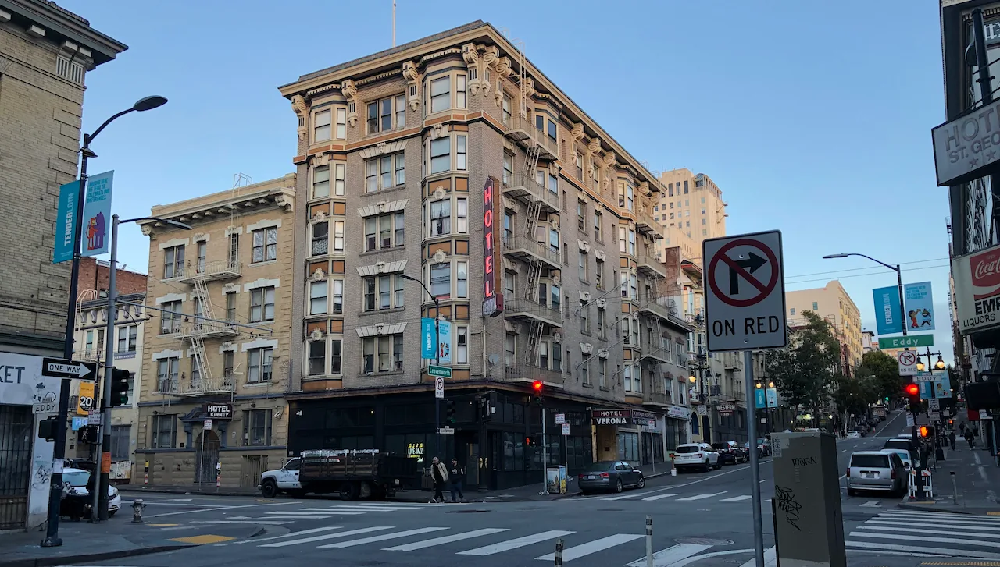

My spirit is grieving. I do not say it to solicit pity or sympathy. I merely say it as anything else I shout into this digital void - that those blessed enough to be in community with me can witness my truth. It is as dry a fact as if I were to say the sky is blue. The trigger of my current bout of grief is a death of someone unrelated to me, but close to someone who means the world to me. There is about twenty or so people in the whole wide world who I consider my closest friends and any loss they suffer shatters my heart as though we shared the same heart. My heart is no stranger to grief and perhaps that is the issue. This young man's life was cut short by poison. Was it jealousy or greed or just pure evil? Where is the justice in the world?
Today in the United States was the commemoration of Martin Luther King Jr, an advocate of justice. One of my favorite quotes by the Reverend Dr King is: "Injustice anywhere is a threat to justice everywhere." My spirit is grieving because there is so much injustice in life and in the world. I grieve the state of disconnect that we find ourselves in, forced by socioeconomic forces and systems to go into exile in the diaspora. Physically removed from my kinspeople that I could not share the burden of grief with my friend by helping collect firewood or digging up the grave or lending my voice in song at the night vigil. Where is the justice in a system where to have such a life of material comfort I have to be apart from loved ones?
How sorrowful it is to live in a world where people are incentivized to make big sacrifices in order to fulfill the desires of their hearts? I still grieve the horrific murder of my uncle - Otlaadisa Ramotlhobogwa "Tlhobosi" Ramarea - almost two decades ago, because a local politician desired victory in the general election and was convinced using his body parts in some ritual would guarantee his victory. His sacrifice was our loved one. I grieve that we had to 1 Kings 21:19 the politician and his accomplices, resulting in seemingly random suicides and accidental deaths of loved ones of everyone involved within 3 months of my uncle's closed casket funeral. Needless to say he lost the election. Was all that loss worth it in the end? Was justice served in the world of the supernatural?
I have been robbed at knife point by strangers in broad daylight and chased with machetes by enraged blood relatives in the dead of night. Were they seeking to fulfill desires of their hearts? Or was it jealousy or greed or just pure evil? How does one poison or decapitate their own relative? What traumas drive these poison disseminating and axe wielding psychopaths? Where is justice for them in their dual roles as victims and perpetrators? My spirit also grieves the violence of the narcissists - oh the sweetness of their manipulative love, and the emptiness of its absence when one is fortunate enough to escape from their invisible grasp. Where is the justice for those perpetually feeling unworthy because of the poisonous words from unloving loved ones?
Who is the perpetrator and who is the victim? I live in the Tenderloin, near downtown San Francisco. There are so many unhoused people here the first time I came I could not believe that there could be that much suffering in the west. After all the socioeconomic systems whose winds of "freedom" propelled me this way convince us that the west is paradise and we must aspire to it. I live a very comfortable life. Is this my justice for all the hardships of my childhood and family life growing up in a formerly colonized country? Or am I a perpetrator of injustice, a gentrifier, contributing to the escalating cost of living here that is leaving many more people unhoused as the city becomes too expensive for them to afford?
There are at least five people in the whole wide world in all of the nearly three decades of my life who can say without thinking twice that I am definitely a perpetrator of injustice. I grieve that they are not wrong to say that. I grieve that I sometimes forget to be gentle with myself and remember I do not have the power of the world. If I did and allowed injustice to persist, then I would deserve to feel disappointed in my own role. I grieve the truth that we do not realize that collectively we have the power of the world and can, as Martin Luther King Jr hoped, bend the arc of the moral universe towards justice. My spirit is grieving.
← Return to Blog